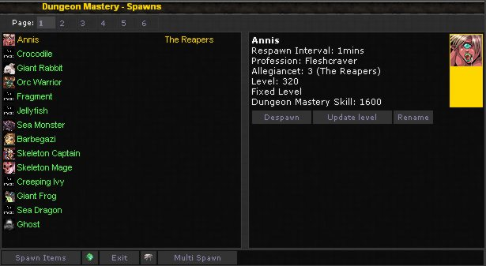
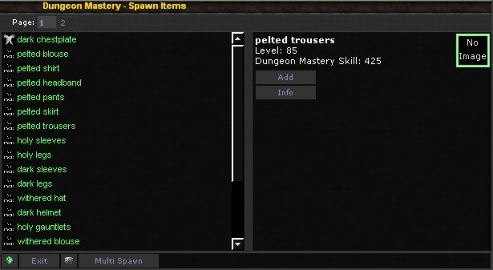

| |||||||||
| |||||||||


| |||||||||
|
As a dungeon owner you can setup all kinds of different monster spawns in your dungeon, with the emphasis on killing visitors its probably wise to have weaker monsters near the entrance to lull them into a false sense of security then wicked hard monsters later on.
The blinking red eyes button opens the spawn screen when standing inside your dungeon room, it is possible to spawn more than one room at once using a Multi-spawn screen which can be accessed via the room spawn screen.  The spawn screen shows all of the races you can spawn (boss rooms may show more / different race options), when spawning a race you can alter its level and change its name to suit whatever diabolical plan you might have. You can also use this screen to despawn a room. The more Dungeon Mastery skill you get the more race spawn options you have and the higher the level of monster you can spawn, as you get higher skill you can raise the existing spawn levels using this screen or spawn a new monster. At the bottom of this screen are buttons to access the Item Spawn screen and the Multi-spawn screen. Spawn Items The spawn items screen allows you to setup items that the spawn in this dungeon room will drop, some drops are random while others will always drop.  If the monster can use the item and it has nothing better it will equip the item automatically. When spawning boss rooms with items you will have the option of adding better items as well as dungeon tokens (not to be confused with Legend Tokens), dungeon tokens will drop rarely on boss mobs but they can be used to claim rare and interesting rewards from prize chests, and prize chests can be built in prize rooms. Spawn Pools A more recent addition to the game Spawn Pools are a nifty way for dungeon owners to setup a list of common monsters they want to spawn and then set that list to a room this means rather than having a fixed race spawn in the room each time instead one race from your pool is chosen and then used. You can have multiple pools and mix this system up with the standard spawn system for an amazing amount of possibilities. Use the Pool list button at the bottom of the Spawn screen to manage and setup a pool, and then use the Pools button at the bottom of the spawn screen to apply a pool to the current room. | |||||||||
| |||||||||